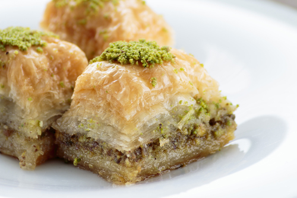
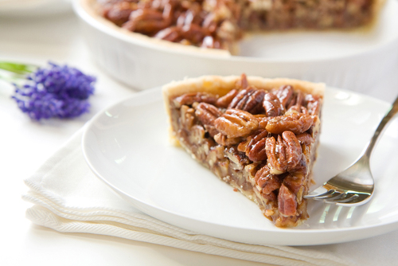
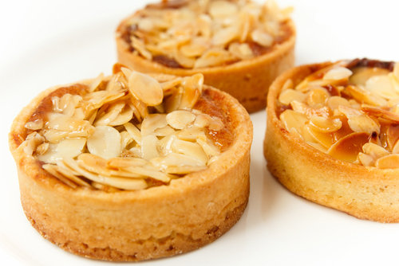

Task 3: Producing and Presenting Desserts and Puddings
Click 'NEXT' to start.
Click 'NEXT' to start.
When producing desserts and puddings it is essential that the correct techniques are applied and followed to ensure:
Quality points:
Quality points:
Quality points:
Quality points:
Quality points:
Quality points:
Quality points:
Quality points:
Quality points:
Quality points:
When finishing and presenting desserts and puddings, the chef has an array of accompaniments available to enhance the flavour and appearance of the finished products. These include the following accompaniments:
A coulis is prepared by:
A coulis can be used to decorate plates or can be added to a dessert or pudding to enhance the flavour.
Crème anglaise is prepared by:
A powder-based custard is prepared by:
Powder-based custard is generally used as a hot accompaniment but also can be cooled and used with a trifle.
Chantilly cream is a sweetened whipped cream. It is prepared by:
Chantilly cream is a decorative accompaniment but is also used to fill dishes such as profiteroles and crêpes.
Butterscotch sauce is prepared by:
Butterscotch sauce can be used to flavour steamed pudding but is also used cold to decorate plates.
There are many decorative items that can be used to enhance desserts and puddings. These can all provide a visual impact but also add texture and flavours. Examples include:
Fruits are often used as part of a dessert or pudding but also can be used decoratively. Different methods or types can be used to help enhance the fruit’s textures and visual impact, including:
Nuts are often used to decorate desserts and puddings. They will add a different texture as well as flavour to any finished dish. They can be used:
|  |  |  |
Examples include finishing a pecan pie with whole, caramelised pecans, a coffee cake with chopped walnuts, baklava with ground pistachio or a Bakewell tart with flaked almonds.
Cream is used as a basic ingredient but also to present a finished product. There are many creams available to use to decorate or finish a dessert or pudding including:
Chocolate is a very versatile flavouring of desserts and puddings but is also used extensively when presenting dishes to the customer. It can be used for:
Biscuits are often used to accompany desserts, especially cold ones. Some examples of this are:
Fillings and sauces for desserts and puddings
The use of different fillings and sauces when making desserts and puddings allow chefs to introduce other flavours and texture to the dish that will complement the main ingredients. Various types of fillings can be made and include:
The list of sauces is vast and can also include foams, some examples include:
Whatever the recipe you are following you must always remember that the filling and sauce is there to provide contrast and add to the experience of the customer. Some examples of the recipes available are below:
Butterscotch sauce
Place all the ingredients in a thick based pan and slowly melt, once melted bring to the boil, stirring continuously until the sauce has thickened to the required consistency. Serve either hot or cold.
Sauce Anglaise
Combine the milk, cream and split vanilla bean in a heavy bottomed pan and then simmer to allow the vanilla to impart its flavour. Whisk the egg yolks and sugar together then add the milk / cream liquid. Place back on the cooker and heat until the sauce thickens, coating the back of a spoon, stirring continuously. Strain the sauce and serve immediately.
Ganache
Melt the butter and cream together and bring to the boil then break the chocolate into smaller pieces and add it to the liquid. Remove the mixture from the heat and stir until the chocolate is all melted. Allow the mix to cool and then whisk until the mixture is smooth.
Chantilly cream
Place all the ingredients into a bowl and whisk until the required consistency is achieved.
Coulis
Dissolve the sugar in the water over heat until the consistency thickens, blend the fruit and strain to produce a puree. Mix the syrup with the puree and add the juice of two lemons, allow to cool and refrigerate until required.
Chocolate foam (Espuma)
Break the chocolate into smaller pieces and mix with the cream in an ovenproof bowl, place over a Bain Marie until melted. Remove from the heat and then whisk in the egg whites until thoroughly combined. Place in an Espuma gun and charge. A thicker mix is achieved if the filled Espuma gun is stored in a fridge.
Puddings
Again puddings can be filled with a variety of different ingredients including fruit and sauces. In recent times it has become “fashionable” for Christmas puddings to be filled with a whole orange or a clementine. Individual puddings can be filled with coulis or sauces, especially chocolate sauce which is a particular favourite at the dinner table.
You have now reached the end of this unit and are ready to progress to the media content or quiz. You can do this by clicking on the tabs below. Remember that you can revisit this unit to revise at any time.